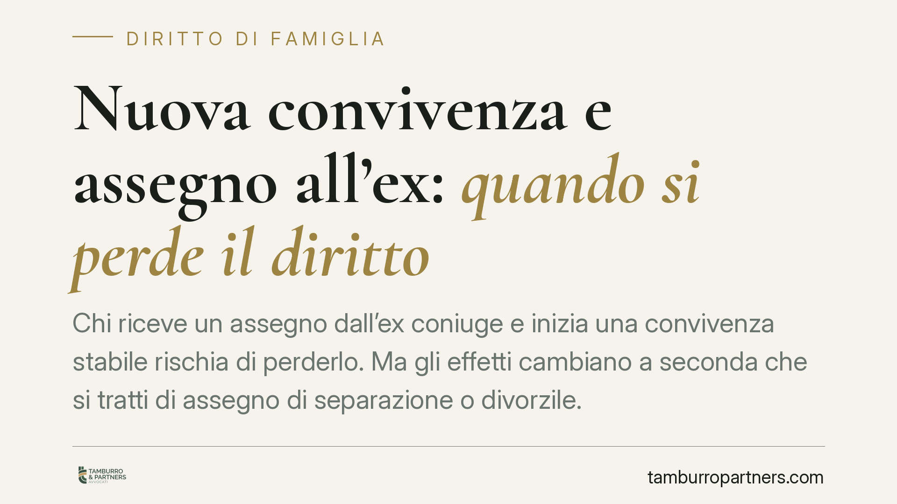

Nuova convivenza e assegno all'ex: quando si perde il diritto
Chi riceve un assegno dall'ex coniuge e inizia una convivenza stabile rischia di perderlo. Ma gli effetti cambiano a seconda che si tratti di assegno di separazione o divorzile. Analizziamo il quadro giurisprudenziale, la rilevante eccezione per il coniuge economicamente sacrificato e perché l'età avanzata non basta a conservare il diritto.

Il punto di partenza
La domanda ricorrente è semplice: se l'ex coniuge beneficiario di un assegno avvia una nuova convivenza, continua a percepirlo? La risposta non è univoca, perché dipende da quale assegno si considera. Confondere i due regimi genera aspettative sbagliate da entrambi i lati.
Prima di procedere, una nota di trasparenza: alcune fonti divulgative citano una recente ordinanza della Cassazione (n. 5896/2026). Al momento della redazione tale riferimento non è verificabile: lo segnaliamo come dato da riscontrare prima di qualsiasi utilizzo in sede difensiva. I principi esposti di seguito poggiano invece su pronunce consolidate e certe.
Inquadramento normativo
Occorre distinguere due figure.
L'assegno di mantenimento in sede di separazione (art. 156 c.c.) presuppone la permanenza del vincolo coniugale. I coniugi separati restano sposati: la solidarietà matrimoniale non si estingue. Per questo la giurisprudenza è più prudente: una nuova convivenza del beneficiario può incidere sul *quantum* — perché modifica le condizioni economiche complessive — ma non ne determina automaticamente l'azzeramento.
L'assegno divorzile (art. 5 L. 898/1970) opera invece dopo lo scioglimento del vincolo. Qui la giurisprudenza è netta: la formazione di una nuova famiglia di fatto, stabile e duratura, fa cessare la solidarietà post-coniugale e, con essa, il diritto all'assegno (orientamento risalente a Cass. n. 6855/2015 e consolidatosi successivamente).
Su questo si innesta la duplice funzione dell'assegno divorzile chiarita dalle Sezioni Unite (Cass. SU n. 18287/2018): non solo assistenziale (garantire l'autosufficienza), ma anche compensativa, ossia riconoscere il contributo dato alla vita familiare e il sacrificio di prospettive professionali durante il matrimonio.
L'eccezione che conta
Proprio la componente compensativa spiega l'unica deroga rilevante. Se l'ex coniuge ha rinunciato al lavoro per dedicarsi alla famiglia e, anche con la nuova convivenza, non raggiunge l'autosufficienza, una quota dell'assegno divorzile a titolo compensativo può essere riconosciuta. Non si premia la nuova relazione: si riequilibra un sacrificio passato che ha prodotto effetti economici durevoli.
Attenzione però ai limiti. L'età avanzata, di per sé, non è causa esimente: non basta affermare la difficoltà a reinserirsi nel mercato del lavoro. Serve dimostrare in concreto la rinuncia, il suo nesso con le scelte familiari e la persistente mancanza di autonomia economica.
Implicazioni pratiche
Per chi percepisce l'assegno. Se è divorzile, l'avvio di una convivenza stabile espone al rischio concreto di revoca. Se è di mantenimento da separazione, il rischio è una riduzione più che una cessazione, ma la nuova situazione economica va comunque valutata. In entrambi i casi conta poter documentare l'eventuale profilo compensativo.
Per chi versa l'assegno. La nuova convivenza dell'ex non si traduce automaticamente in un risparmio: va provata nella sua stabilità. L'onere grava su chi chiede la modifica o la revoca.
L'onere della prova
Non è sufficiente una frequentazione o una relazione affettiva. La giurisprudenza richiede una convivenza stabile e continuativa, con caratteri di una vera e propria famiglia di fatto: coabitazione, progetto di vita comune, eventuale contribuzione economica reciproca. Elementi come residenza condivisa, dichiarazioni, movimenti bancari comuni e testimonianze concorrono alla prova.
Cosa fare in concreto
- Individuare il regime applicabile: separazione (art. 156 c.c.) o divorzio (art. 5 L. 898/1970). Gli effetti della nuova convivenza sono diversi.
- Raccogliere elementi sulla stabilità della convivenza: è su questo terreno che si decide la causa.
- Documentare l'eventuale profilo compensativo (rinuncia al lavoro, durata del matrimonio, contributo alla famiglia) se si intende conservare una quota dell'assegno.
- Verificare ogni riferimento giurisprudenziale prima di fondarvi una strategia: le massime divulgative vanno riscontrate sul testo ufficiale.
- Valutare tempistica e strumenti per la domanda di modifica o revoca delle condizioni economiche.
In sintesi
La nuova convivenza incide sull'assegno, ma non con la stessa intensità in separazione e in divorzio. Nel divorzio tende a farlo cessare, salva la componente compensativa; nella separazione, dove il vincolo permane, l'effetto è più contenuto. L'età, da sola, non salva il diritto.
---
*Contributo informativo a cura di Tamburro & Partners — Avv. Giuseppe Tamburro. Non costituisce parere legale.*
Ogni famiglia ha il suo equilibrio.
Separazione, divorzio, affidamento, assegno: se vuoi un confronto riservato su una specifica situazione, scrivi allo studio. Ti rispondiamo entro un giorno lavorativo.